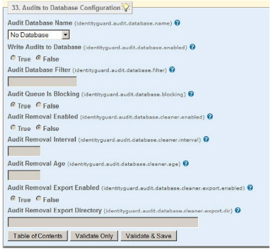

|
IdentityGuard Server 12.0 Administration Guide |
|
IdentityGuard Server 12.0 Administration Guide |
By default Entrust IdentityGuard audits are written to syslog or to files, but you can also write the audits to a database for reporting later, and you can administer the audits in the database using properties that you set up and edit in the Properties Editor.
Note: Configuration of an audit database is a prerequisite for using the real-time Auditor Monitor. If you are not using the Audit Monitor, use of an audit database is optional.
The audit data is available for reporting as well, either through the Administration interface, or through the Master user shell.
Note: If your
Entrust IdentityGuard installation uses a JDBC repository, you can use
your existing repository for storing audits. Alternatively, you can set
up a new JDBC database specifically for your audit data.
If your Entrust IdentityGuard installation uses an LDAP repository, you
must install and configure a JDBC repository for your audit data.
 Fields
in an audit database entry
Fields
in an audit database entry
To enable the writing of Entrust IdentityGuard audits to a database, and to choose the database to use, complete the following procedure.
To configure writing audits to a database
1. Create a new database, if required.
● If your Entrust IdentityGuard installation uses a JDBC repository, you have the choice of using your existing repository for storing audits or setting up a new JDBC database specifically for your audit data.
● If your Entrust IdentityGuard installation uses an LDAP repository, you must install and configure a JDBC repository for your audit data.
2. Start the Entrust IdentityGuard Properties Editor. (See Log in or out of the Properties Editor.)
3. On the Table of Contents, click Audits to Database Configuration.

4. If there is more than one database configured, select the database to use from the Audit Database Name drop-down list.
5. Set Write Audits to Database to True.
6. (Optional) If you want to restrict the audits written to the database, in Audits Database Filter, enter a filter expression.
Filtering is done by the audit code number. Enter a list of audit codes or code ranges to write to the database, separated by commas. All audits that match any one of the specified filter values are written to the database. If you do not specify a filter value, all audits are written to the database.For example, here are some valid audit database filters:
-100 (all audit codes <= 100)
200-300 (all codes between 200 and 300)
1000- (all audit codes >= 1000)
-100, 200-300,1000- (all audit codes <= 100, between 200 and 300 inclusive, or >= 1000)
Note: Do not use the “AUD” audit code prefix in the filter expression.
7. (Optional) Set the Audit Queue Is Blocking setting. Entrust IdentityGuard maintains a queue of audits waiting to be written to the database. You can change the behavior of this queue through the Audit Queue Is Blocking setting.
● If True, requests to Entrust IdentityGuard are blocked until space becomes available in the audit queue.
● If False, the oldest audit in the queue is removed when the queue is full. This frees up space in the queue, ensuring that requests are not blocked.
The default is True.
8. (Optional) To enable automatic removal of old audits from the database, select True under Audit Removal Enabled. This helps keep the database from becoming too large and affecting performance.
When this option is enabled the following optional Audit Removal parameters can be configured:.
● (Optional) Enter the Audit Removal Age. This is the age, in days, of old audits to be deleted. If you do not specify an Audit Removal Age, the default value of 180 days (approximately 6 months) is used.
● (Optional) Enter the Audit Removal Interval. This is the interval, in hours, between checks for old audit records to delete. If Audit Removal is enabled, and you do not specify an Audit Removal Interval, the default value of 24 hours is used.
● (Optional) Set Audit Removal Export Enabled to True to send deleted audits to an export file.
● (Optional) Enter the directory path in Audit Removal Export Directory. This directory is only used if Audit Removal Export Enabled is set to True. If you do not specify a path, exported audit files are written to <$IG_HOME>/export/audits.
Note: If you enter an invalid path for the Audit Removal Export Directory, the default location is used.
9. Click Validate & Save.
10. Restart the Entrust IdentityGuard services to have the changes take effect.